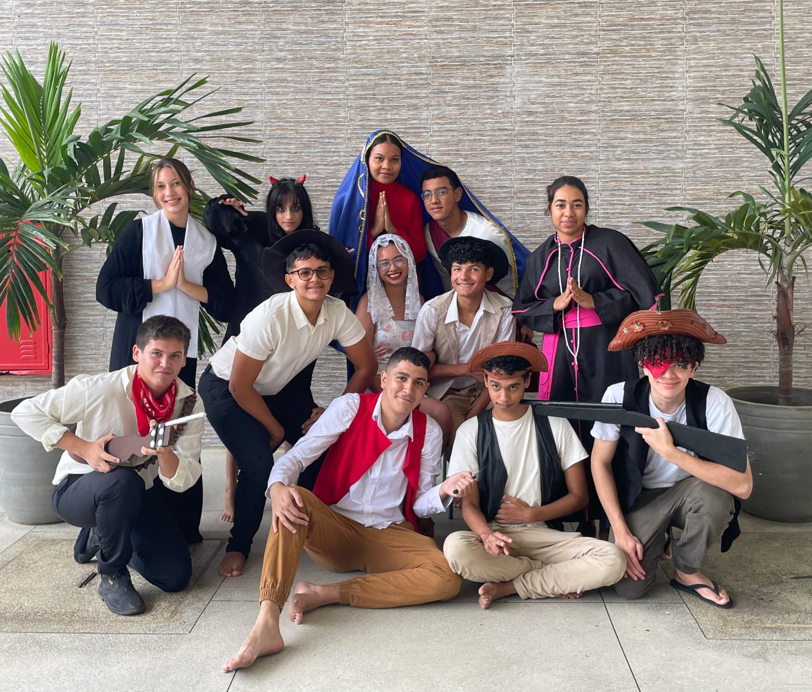

Galeria de Fotos


Isso aqui era só uma atividade... mas já que ficou bonitinho, tá aqui.
Não repara na bagunça, só achei desperdício deixar o código jogado.
Oi! Eu sou a Annelix(um pouco diferente né?), mas pode me chamar de Lily. Tenho 17 anos e estudo na ETE Ariano Vilar Suassuna, cursando o terceiro ano do ensino médio junto com o técnico em Desenvolvimento de Sistemas. Sou católica apostólica romana e, nas horas livres, sou coroinha e catequista.
Gosto de aprender a programar e de explorar projetos com Arduino. Nas horas de descanso, gosto de me dedicar a leitura — desde contos fantásticos de mistério e terror, como os de Edgar Allan Poe, até alguns clássicos. Também curto mangás, webtoons, manhwas e novels. (Gostar de fazer algo não significa que eu seja boa necessariamente, mas eu continuo tentando!)
Esse é um pouquinho sobre mim!
“Tarde te amei, ó Beleza tão antiga e tão nova, tarde te amei...”
— Santo Agostinho
Faço parte do grupo de teatro do colégio. Não é querendo me gabar, mas, sinceramente, é um dos melhores clubes do projeto "DMG" — Descobrindo Meu Girassol (e não é só porque eu participo!). O pessoal, junto com a coordenação, se esforça muito para mantê-lo vivo. Já estamos chegando ao fim. A seguir, você verá algumas fotos aleatórias, inclusive de momentos que já citei.
Instagram: @aenliyx